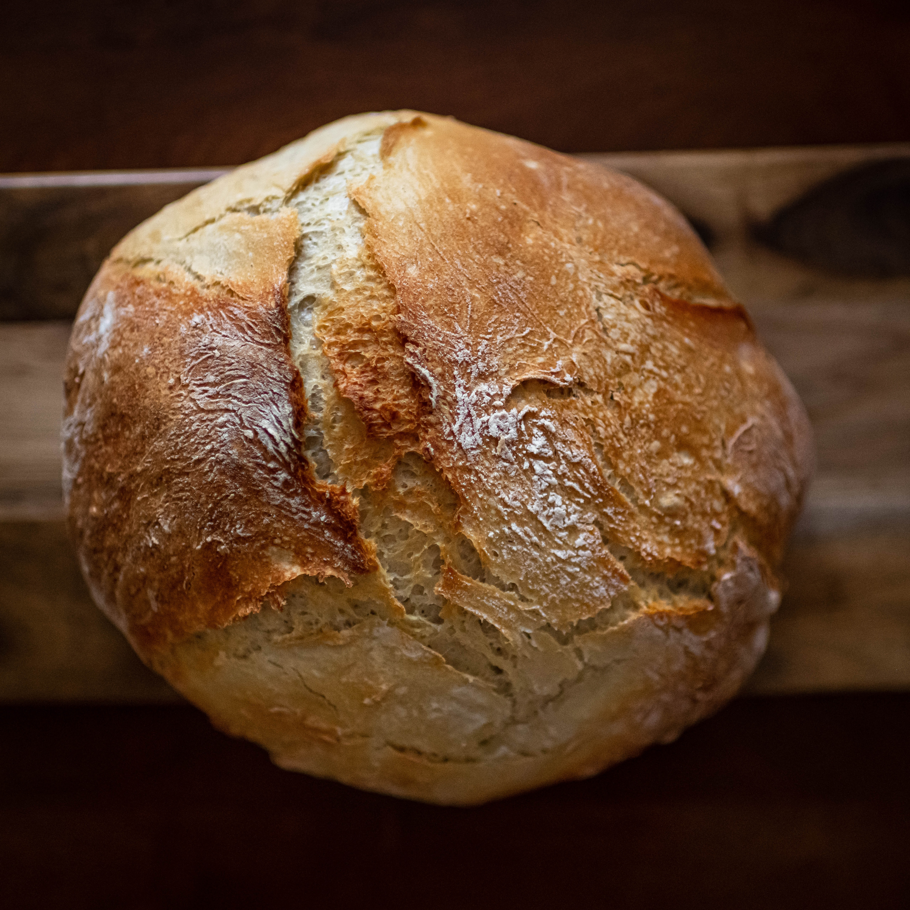

Description
I learned this during summer
Ingredients
1 1/2 cups warm water (95 F to 110 F)
2 1/4 teaspoons or 1 package (1/4 ounce) active dry yeast
1/2 cup milk
1 tablespoon sugar, coconut sugar, or raw sugar
2 teaspoons salt or sea salt
1/3 cup canola oil, coconut oil, or shortening
About 4 1/2 cups bread flour
Optional: egg white or milk for brushing on the loaf
1 tablespoon butter (melted)
Steps
1. In a large bowl, mix the warm water and yeast. Add the milk, sugar, salt, and oil and stir to combine.
2. Add in enough bread flour to make a dough that follows the spoon around the bowl.
3. Turn the dough out onto a lightly floured surface and knead it for 8 minutes, adding more bread flour as needed until the dough is firm and smooth to the touch.
4. Place the dough in a medium greased bowl. Turn dough over in the bowl so that the top is also lightly greased. Cover with clean cloth and let rise in warm, draft-free place for 1 hour.
5. Punch down the dough. Turn the dough out onto a lightly floured surface and knead it for about 5 minutes or until the bubbles are out of the bread. Shape the dough into a round loaf and place it in a greased 1 1/2-quart round casserole dish. Cover and let rise in a warm, draft-free place for 45 minutes or until doubled in size.
6. Preheat oven to 375 F. With a sharp knife or razor, slash the top of the bread. For a glossy top, brush an egg white on top of the loaf, or brush loaf with milk before baking to produce a dark, shiny crust.
7. Bake the bread for 45 minutes or until the bread sounds hollow when the top is tapped. Remove the bread from the casserole dish and let cool on a rack. Brush loaves with butter immediately after baking to produce a soft crust.
2. Add in enough bread flour to make a dough that follows the spoon around the bowl.
3. Turn the dough out onto a lightly floured surface and knead it for 8 minutes, adding more bread flour as needed until the dough is firm and smooth to the touch.
4. Place the dough in a medium greased bowl. Turn dough over in the bowl so that the top is also lightly greased. Cover with clean cloth and let rise in warm, draft-free place for 1 hour.
5. Punch down the dough. Turn the dough out onto a lightly floured surface and knead it for about 5 minutes or until the bubbles are out of the bread. Shape the dough into a round loaf and place it in a greased 1 1/2-quart round casserole dish. Cover and let rise in a warm, draft-free place for 45 minutes or until doubled in size.
6. Preheat oven to 375 F. With a sharp knife or razor, slash the top of the bread. For a glossy top, brush an egg white on top of the loaf, or brush loaf with milk before baking to produce a dark, shiny crust.
7. Bake the bread for 45 minutes or until the bread sounds hollow when the top is tapped. Remove the bread from the casserole dish and let cool on a rack. Brush loaves with butter immediately after baking to produce a soft crust.
Test
Test